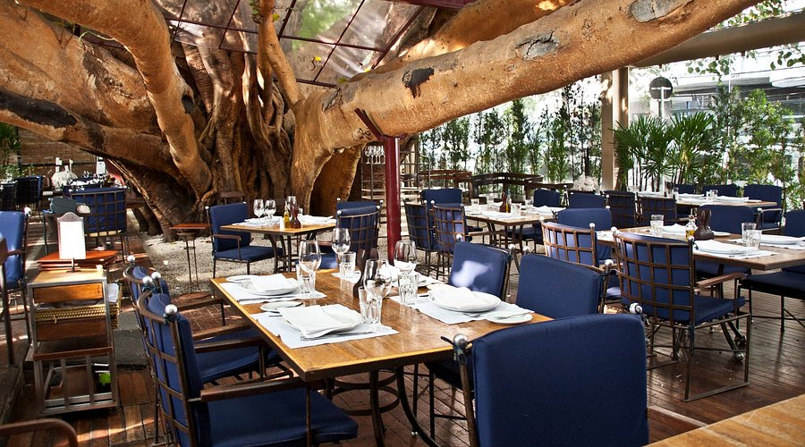
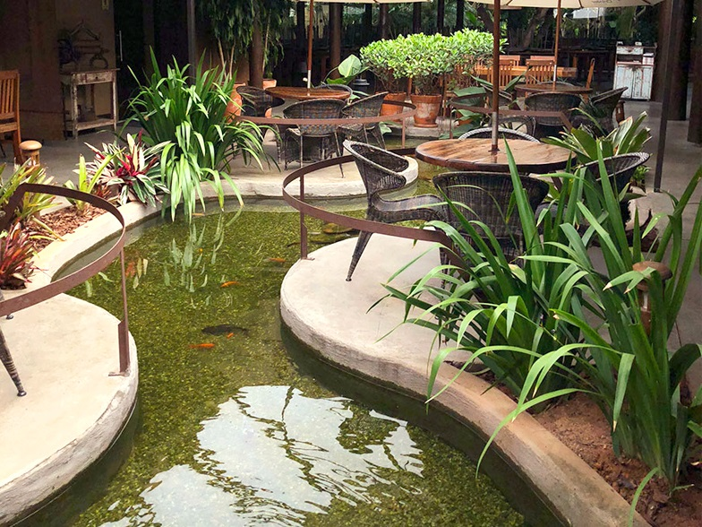

O Figueira Restaurante é uma renomada steakhouse inaugurada em dezembro de 2006 em Blumenau, Santa Catarina. A casa é amplamente reconhecida pela excelência no preparo de carnes nobres na parrilla e pela forte integração com a natureza. História e Conceito Origem das Receitas: O cardápio nasceu de receitas caseiras preparadas originalmente em encontros informais com amigos e posteriormente aperfeiçoadas para a alta gastronomia. Contato com a Natureza: Projetado como um "cantinho da natureza dentro da cidade", o espaço oferece iluminação suave, elementos rústicos em madeira e um lago central com peixes que os visitantes podem alimentar

